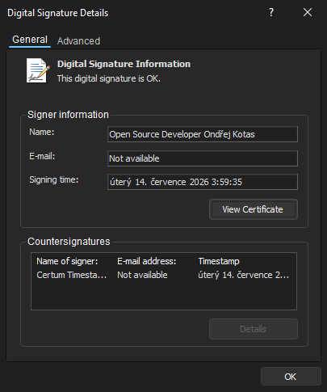

Portability
- Store the configuration in files instead of the Registry and use a portable installation without Registry entries.
Fast and reliable two-panel file manager for Windows 11 enhanced with modern features.
Feature guide
Move configurations safely between installations and understand the trust and capability model for installed components.
